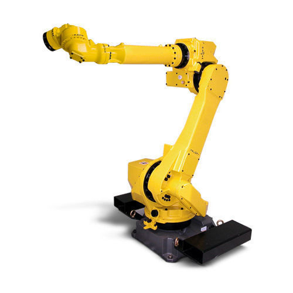
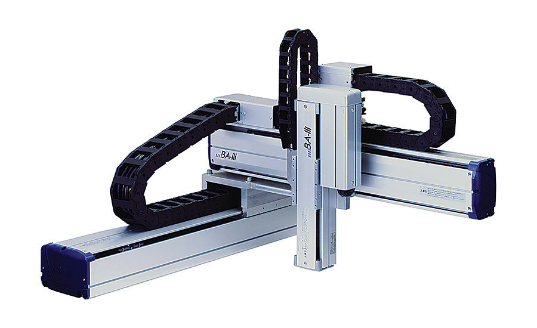
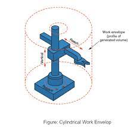
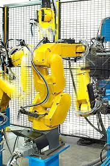
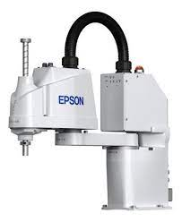
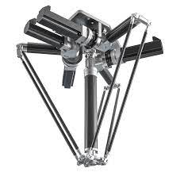

Types Of Robots
Home
These are the some types of robots given below:
- Articulated: The feature of this robot is its rotary joints and range of these are from 2 to 10 or more joints. The arm is connected to the rotary joint and each joint is known as the axis which provides a range of movements.

- Cartesian: These are also known as gantry robots. These have three joints which use the Cartesian coordinate system i.e x, y, z. These robots are provided with attached wrists to provide rotatory motion.

- Cylindrical: These types of robots have at least one rotatory joints and one prismatic joint which are used to connect the links. The use of rotatory joints is to rotate along the axis and prismatic joint used to provide linear motion.

- Polar: These are also known as spherical robots. The arm is connected to base with a twisting joint and have a combination of 2 rotatory joint and one linear joint.

- Scara: These robots are mainly used in assembly applications. Its arm is in cylindrical in design. It has two parallel joints which are used to provide compliance in one selected plane.

- Delta: The structure of these robots are like spider-shaped. They are built by joint parallelograms that are connected to the common base. The parallelogram moves in a dome-shaped work area. These are mainly used in food and electrical industries.
